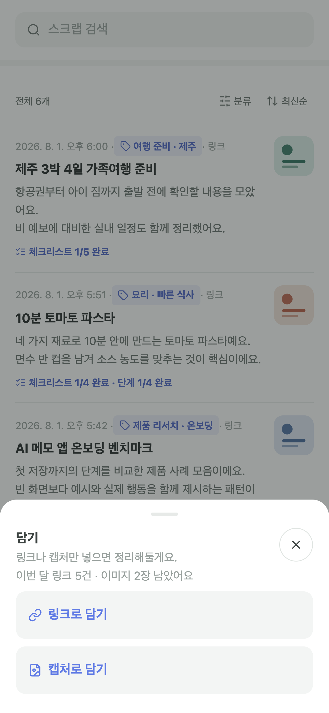
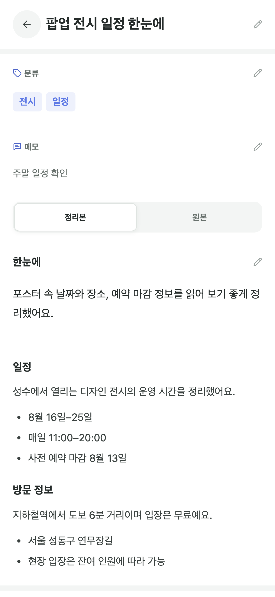
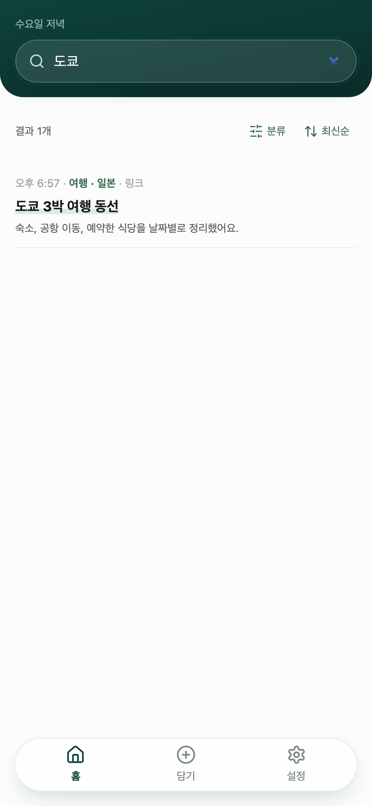

링크 또는 캡처 선택
웹 링크와 사진 앱의 캡처를 같은 담기 화면에서 시작합니다.

여행 계획, 쇼핑 비교, 업무 자료, 레시피, 운동 기록까지. 나중에 보려고 담아둔 링크와 사진을 AI가 읽고 정리해 필요한 순간 바로 찾게 해줍니다.
로그인 없이 시작하고, 스크랩은 내 기기와 선택한 내 iCloud에 보관합니다.
담기부터 다시 찾기까지
별도의 정리 습관을 만들 필요가 없습니다. 모아에 담으면 원문을 잃지 않은 정리본과 필요한 체크리스트가 만들어지고, 내 방식대로 고친 내용까지 함께 검색할 수 있습니다.
웹 링크와 사진 앱의 캡처를 같은 담기 화면에서 시작합니다.

한눈에 보는 요약과 정리된 본문을 함께 보고, 목록은 바로 체크할 수 있습니다.

기억나는 단어 하나로 저장한 내용을 다시 찾습니다.

무료로 시작
무료
모아 프리미엄
가격과 무료 체험 조건은 App Store 표시 기준입니다.
자주 묻는 질문
일반 웹 링크와 사진 앱에서 고른 캡처 이미지를 담을 수 있습니다. 접근이 제한되거나 원문을 제공하지 않는 웹페이지는 정리에 실패할 수 있으며, 이때는 해당 내용을 캡처해 담을 수 있습니다.
원본은 먼저 이 기기에 저장됩니다. iCloud 동기화를 켜면 내 Apple 계정의 비공개 iCloud에도 동기화됩니다. AI 정리 중에는 내용이 처리 서버로 전송되지만 정리 후 회사 서버에 원문을 보관하지 않습니다.
iCloud에 동기화되지 않은 로컬 스크랩은 앱 삭제 시 함께 사라집니다. 기기 변경이나 재설치 전에 iCloud 동기화를 켜거나 설정에서 수동 백업 파일을 내보내세요.
결제와 무료 체험, 갱신, 취소는 Apple 구독 시스템에서 처리됩니다. 앱 설정에서 구매를 복원할 수 있고, 구독 변경이나 취소는 Apple 계정의 구독 관리에서 할 수 있습니다.
모아 · MOA